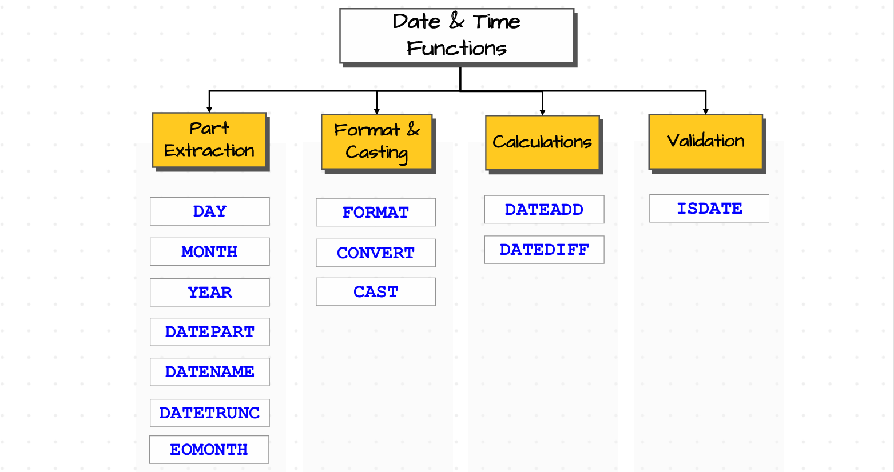
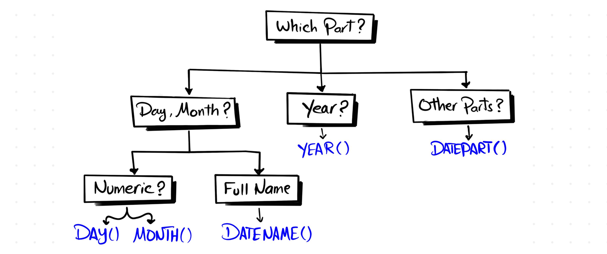
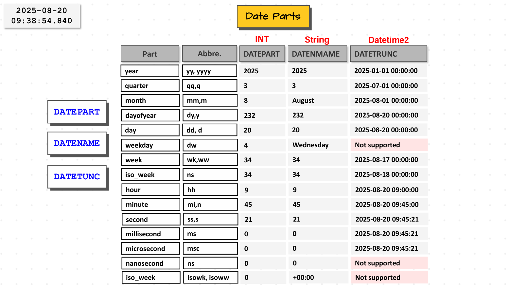
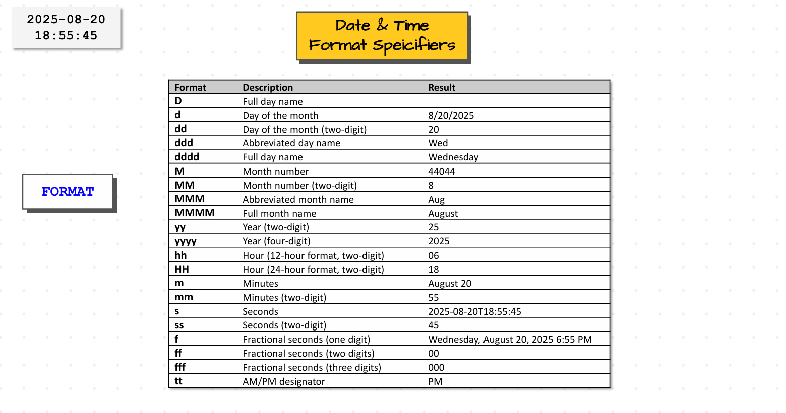
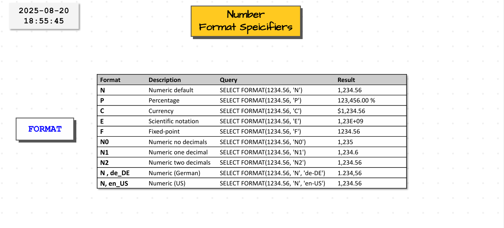
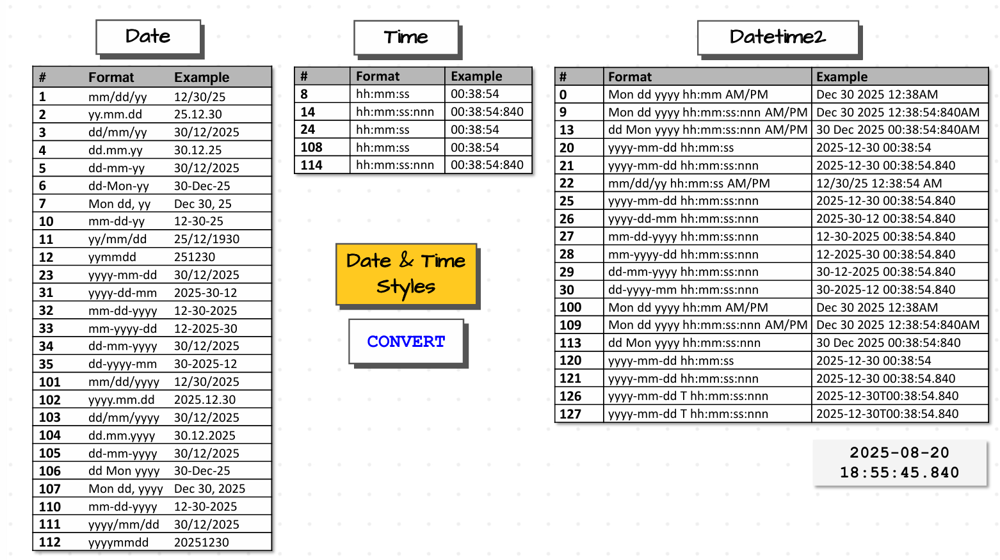
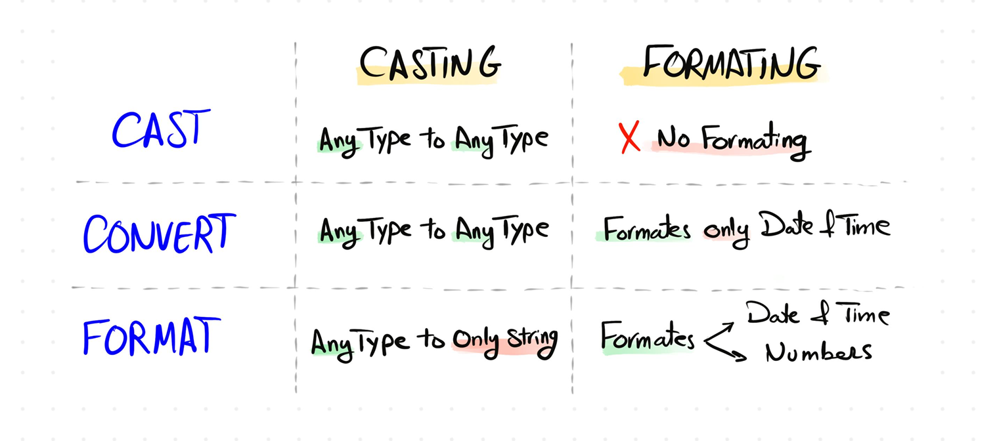

Date and Time Functions#
Introduction#
A Date in SQL represents a date particular event happened such as birthday, project deadline or order placed day etc. The date format in SQL contains 3 components. Those are year, month and day. Month is in the range of 0 to 12 and day is in range of 1 to 31 depending upon the month. So format is
year-month-day. Example for date is2025-04-12.Time in SQL represents a specific point within a day. It also consists of 3 components. Those are hour, minutes, seconds. Hour ranges from 0 to 23, minutes and seconds ranges from 0 to 59. Fromat of time is
hour-minutes-seconds. Example for time is18:25:46.There is anothor data type in SQL which is called as Timestamp (in PostgreSQL, MySQL, Oracle) or datetime (in SQL Server) which is combination of date and time which represents exact time and date an event happened. Example for timestamp or datetime is
2025-04-12 18:25:46.As we know what date and time is, now lets see what operations we can perform on date and time. We can majorly perform 4 different types of operations on date and time. We can extracts the parts of the date such as year, month, day, format the date or time in different formats, perform so calculations on date such as addition of two dates or finding the difference between two dates etc and validate the data in sql such as checking particular date is valid or not. Based on these we can divide the date and time functions into four categories such as Extraction, Format & Casting, Calculations and Validation which is shown in below image.

Date and Time Functions
Date Part Extraction Functions#
DAY, MONTH, YEAR Functions#
DAY() function is used to extract day from the date, MONTH() function is used to extract month from the date and YEAR() function is used to extract year from the date. Input can be date or datetime. The basic syntax of three functions is
func(<date>). Here func can be anyone of DAY(), YEAR() or MONTH().Ex : Extract the DAY, Month and year of the a customer’s order.
SELECT OrderID, CreationTime, DAY(CreationTime) as Day, MONTH(CreationTime) as Month, YEAR(CreationTime) as Year FROM Sales.Orders
DATEPART Function#
DATEPART() function in SQL is used to return the specific parts of a DATE as an integer. It can be year, month, day, quarter (1 to 4), dayofyear (1 to 366), week ( week number in year : 1 to 52), weekday (day of the week mean Sunday-1, Monday-2 etc), hour, minute, second, millisecond etc. Anyway it would return all parts as an integer only
Basic syntax of DATEPART() is
DATEPART(<datepart>,<date>).Ex : Extract all possible parts from Customers Order CreationTime.
SELECT OrderID, CreationTime, DATEPART(day,CreationTime) as day_dp, DATEPART(month,CreationTime) as month_dp, DATEPART(year, CreationTime) as year_dp, DATEPART(quarter,CreationTime) as quarter_dp, DATEPART(week,CreationTime) as week_dp, DATEPART(weekday,CreationTime) as weekday_dp, DATEPART(dayofyear,CreationTime) as dayofyear_dp, DATEPART(hour,CreationTime) as hour_dp FROM Sales.Orders;
DATENAME Function#
DATENAME() function is used to return the specific parts of the date as string. That means we can return day, month, year, week, weekday, dayofyear, hour, minute, second as string. Since we have names for month and weekday only such as August, Monday and all other doesn’t have any name so we get values but stored as string.
Basic Syntax of DATENAME() function is
DATENAME(part,date).Ex : Extract Month and weekday name from Customers Order CreationTime.
SELECT OrderId, CreationTime, DATENAME(month,CreationTime) as month_dn, DATENAME(weekday,CreationTime) as weekday_dn, DATENAME(year,CreationTime) as year_dn FROM Sales.Orders
DATETRUNC Function#
DATETRUNC() function is used to extract the data information upto certain level and return output in datetine format itself. As we know, datetime format has multiple levels but majorly we see six levels. Those are year, month, day, hour, minutes, seconds. Suppose if you want the datetime upto just minute level then DATETRUNC make seconds to 00 and keep until minute level only.
For example, we have datetime value as
2025-04-12 18:25:46and you want only until minute level then DATETRUNC makes seconds as 00 and returns2025-04-12 18:25:00as output. If you want hour level then it returns2025-04-12 18:00:00. If you want day level then it returns2025-04-01 00:00:00. If you want month level then puts 01 in place any day to make it start of the month and returns2025-04-01 00:00:00. If you want year level then it makes month as 01 which starting month of the year and returns2025-01-01 00:00:00. So DATETRUNC actually takes smallest level parts based on the level you mentioned and makes those parts to its minimum values as we know the minum values of hours, minutes, seconds are 00 and month, day are 01.Basic Syntax of DATETRUNC is -
DATETRUNC(<part>,<date>). Here part can be year, month, day, hour, minute, seconds etc.Ex : Extract the day level info Customers order Creationtime.
SELECT OrderId, CreationTime, DATETRUNC(day, CreationTime) as day_tr FROM Sales.Orders
These DATETRUNC() function are majorly used to perform the aggregation and analytics tasks. Suppose you have only Order creation time only and you want to know how many orders we got each month in this year then how can we get that one by truncating the date to month level and perfrom aggregations by using group by.
SELECT DATETRUNC(month,CreationTime) as month_tr, Count(*) FROM Sales.Orders GROUP BY DATETRUNC(month, CreationTime)
Note : DATETRUNC() only pushes to period boundaries if that datepart represents period in a year. If you see dayofyear is not a period in a single year. It just represents the ordinal number or label inside a year which is current day from start of the year such as 80th day in this year etc. So it maynot used in DATETRUNC() as it behaves like day in DATETRUNC() as period is that day iteself. It just used in date extraction part like DATEPART() function to acesses the seasonal trends in sales etc.
EOMONTH Function#
EOMONTH() function returns the end data of the month as output. Suppose if you date is
2025-06-12then EOMONTH() function returns the2025-06-30as output.Basic syntax of EOMONTH() is
EOMONTH(<date>).Ex : Get the End of the Month for each customers order creationtime.
SELECT OrderID, CreationTime, EOMONTH(CreationTime) as Endofmonth FROM Sales.Orders
Usecases of Date Extraction Functions#
Data Aggregations and Reporting : Date Extraction Functions are majorly used to perform aggregations by year, month or days and generate reports based on that aggregations. For example, if you want to get sales of each year, then we have extract year part from the orderdate and then perform groupby on top of the year part then we get sales for each year. Similarly it can be used to get how many orders placed in each month, year etc.
Ex : Find no of orders placed in each month of every year.
SELECT Year, Month, No_of_Orders FROM ( SELECT YEAR(OrderDate) as Year, DATENAME(month,OrderDate) as month, Month(OrderDate) as Monthnum, Count(*) as No_of_Orders FROM Sales.Orders GROUP BY Year(OrderDate), DATENAME(month,OrderDate), Month(OrderDate) UNION ALL SELECT YEAR(OrderDate) as Year, DATENAME(month,OrderDate) as month, Month(OrderDate) as Monthnum, Count(*) GROUP BY Year(OrderDate), DATENAME(month,OrderDate), Month(OrderDate) ) t ORDER BY Year Asc, Monthnum ASC
Date FIltering : Date Part Extraction functions are also used in cases of Data Filtering situations. Suppose if you want to filter the Orders placed in the month of febraury then first we need to extract the month part from it and then we need to used it in WHERE Clause. In these type of cases we can use Date Part Extraction Functions.
Ex : Get all the orders which are placed in the month of february.
SELECT * FROM Sales.Orders WHERE Month(OrderDate) = 2 UNION ALL SELECT * FROM Sales.OrdersArchive WHERE Month(OrderDate) = 2
Note : When you filtering the data, try to filter the data using integers instead of strings as integer comparisions are faster than string comparisions. This is the reason why i have used the Month() function instead of DateName() function for comparision.
Comaprisions of All Date Part Extraction Functions#
The Ouput of each date part extraction functions are :
DAY(), YEAR(), MONTH(), DATEPART() - Integer
DATENAME() - String
DATETRUNC() - DateTime
EOMONTH() - Date
Generally we have doubts when to use which functions. It depends on the type of part you want day, month and if you want them as numeric values then we use DAY(), MONTH() or if you want them as Strings then we use DATENAME(). If you want year part then we use YEAR() function as year has no name, so we can’t use DATENAME() function. If you want any other parts of date, then we can use DATEPART() function.

Decision of Date Part Extraction FunctionsThe Date Parts present in sql are

Date Parts
Date Formatting and Casting Functions#
Introduction to Fomatting and Casting#
Before to going to see how we format the dates in sql, lets the different formats we used to represent the dates in real world. Generally in sql server, a date can be represented by using the following format
yyyy-MM-dd HH:mm:sswhich is International Standard Format (ISO) where captial M represents months and small m represents minutes. We have other formats such asMM-dd-YYYYorMM-dd-YYorMMM-YYYY(Aug 2025) these are the formats used as standard date formats in USA. Whereas europe usesdd-MM-YYYYas standard format for representing the dates.Generally to change the format date, SQL Server uses FORMAT() function. This function takes the type of format as input and converts the date into that format. For example you want to convert the date
2025-08-20toMM/dd/yythen it gives08/20/25as output. Similary forMMM YYY, it givesAug 2025as output. This FORMAT() can be used to format the numeric data types and strings also.We have another function to format the date which is CONVERT(). CONVERT() function takes the style code as input and coverts the date to format that represented by the style code. If ypu give 6 as style code, then it convets above mentioned date to
20 Aug 25etc.SQL use CAST() or CONVERT() function to convert one data type to anothor data type.
FORMAT Function#
Format() function can be used to format dates, numbers into preffered format we want. The basic sybtax of FORMAT() function is :
FORMAT(value, Format, [, culture]). Here value can be date or number and culture parameter can be optional. Culture parameter to used to provide the style of country. Suppose if you want japan style then we useja-JP. By default it is USA format which isen-US.Ex : Format the OrderDate to get days and month in different format and also format it to usa and europe formats
SELECT OrderDate, FORMAT(OrderDate, 'MM-dd-yyyy') as USA_Format, FORMAT(OrderDate, 'dd-MM-yyyy') as Euro_Format, FORMAT(OrderDate, 'dd') as dd, FORMAT(OrderDate, 'ddd') as ddd, FORMAT(OrderDate, 'dddd') as dddd, FORMAT(OrderDate, 'MM') as MM, FORMAT(OrderDate, 'MMM') as MMM, FORMAT(OrderDate, 'MMM') as MMMM FROM Sales.Orders
Ex : Convert the orderdate to custom date i.e
Day Wed Jan Q1 2025 12:41:56 PMSELECT CreationTime, 'Day ' + Format(CreationTime, 'ddd MMM ') + 'Q' + DATENAME(quarter,CreationTime) + Format(CreationTime, ' yyyy hh:mm:ss tt') FROM Sales.Orders
This FORMAT() function can be used in many usecases. Those are :
Data Aggregations : Sometimes we want to show monthly sales as ‘Jan 2025’ format in reports. Inorder to get this format then we have to first convert the date into that format and perform aggregations. For this we need to use this FORMAT() function.
SELECT FORMAT(OrderDate, 'MMM yyyy') as OrderDate, COUNT(*) as No_of_Orders FROM Sales.Orders GROUP BY FORMAt(OrderDate, 'MMM yyyy')
Data Standardization : In real world scenarios, we might get data from different source systems such as APIs, databases, csv files etc where data might be stored in different formats. Such as date from APIs might be in
dd-MM-yyformat, databases might beMM-dd-yyyyformat and csv files might bedd/MM/yyyyformat. When we are moving all these data into centralized database then we have to clean and standardize these dates into one format and stored it in the centralized database.Some Date and Time Format Specifiers are:

Date and Time Format SpecifiersSome Number Format Specifiers are:

Number Format Specifiers
CONVERT Function#
CONVERT() function is majorly used to convert the data type of a value from one type to anothor type and it also used to format that value. The basic syntax of the CONVERT() function is:
Syntax :
CONVERT(datatype, value, [,style])In the above syntax, style could be optional. Generally it is code which is used to format the date, time and datetime values or any other datatypes. The general style codes used in convert function are shown below.

Style CodesEx : Convert the CreationTime to Date type and format the creationtime to USA and european format
SELECT CreationTime, CONVERT(date, CreationTime) as CreationTime_date, CONVERT(VARCHAR,CreationTime,32) as USA_format, CONVERT(VARCHAR,CreationTime, 34) as Euro_format FROM Sales.Orders
Note : Formatting has meaning when it type of value that you are formatting is string. Suppose if you first convert the CreationTime to date and then applied style code as 32 to change it to USA Format then it doesn’t change it usa format instead it ignores the syle code and keeps date as its. So here it does only casting and it doesn’t do formatting. So CONVERT() function is only formats the strings to values to specified format.
CAST Function#
CAST() function is used to convert any data type to any data type if it is compatible. The basic syntax of CAST() function is :
Syntax :
CAST(value As Data_Type)Ex :
SELECT CAST('123' AS Int) AS String_to_Int, CAST(123 AS VARCHAR) AS Int_to_String, CAST('2025-12-23' AS date) As String_to_Date, CAST('2025-12-23' AS datetime2) AS String_to_DateTime
Ex : Convert Custoemrs Order CreationTime to Date
SELECT CreationTime, CAST(CreationTime AS Date) As CreationTime_to_Date FROM Sales.Orders
Comparision of Formatting and Casting Functions#
CAST() function is mainly used to convert any type of data to any other type. It cannot do formatting. Whereas CONVERT() function is used tp convert any type of data to any other type of data and can also format the date and time data. I mean if Style parameter is given then the value must be in VARCHAR type and it formats that VARCHAR to any date or time formats which automatically implies if value in the form of VARCHAR must be date or datetime only. Then only it is compatible with style code. If formatting data is not VARCHAR then CONVERT() doesn’t perform formatting just does type casting and ignores style parameter. FORMAT() function always returns a string value which means it converts anytype of data to string only and it does formatting for both date, datetime and Numbers also.

Comparisions of Casting and Formatting Functions
Date Calculation Functions#
DATEADD Function#
DATEADD() function is used tp add or subtracts dateparts from a particular Date value which means we can add or subtract days, months, years, weeks , hours, minutes, seconds and soon from the dates.
For Date type values we add or subtract days, months, years, week, quarter but we didn’t add or subtract time from Date type values. We can add or subtract time related values then we can do it with DATETIME2 type.
Syntax :
DATEADD(datepart,interval,date)DATEADD(day, 3, '2025-03-12')-> It adds 3 days to this date and returns2025-03-15as output.DATEADD() supports all kinds of dateparts that are supported by DATEPART, DATENAME and DATETRUNC etc except iso_week.
Ex : Add 5 months to the order date to finds the sales after 5 months.
SELECT OrderDate, DATEADD(month, 5, OrderDate) as AfterFiveMonths, DATEADD(day, 15, OrderDate) as AfterFifteenDays, DATEADD(year, -2, OrderDate) as BeforeTwoYears FROM Sales.Orders
Ex : Add 12 hours to the Customers Order CreationTime
SELECT CreationTime, DATEADD(hour, 12, CreationTime) as TwelveHoursAfter FROM Sales.Orders
DATEDIFF Function#
DATEDIFF() function is used to find the datepart difference between a startdate and enddate. This means we can find the no of years, month, days, weeks, hours, minutes between two dates.
Syntax :
DATEDIFF(datepart, startdate, enddate)DATEDIFF(hour,2025-12-23,2025-12-24 06:25:33)results 30 hours. Because if you give date only instead of datetime then it considers that date as date 00:00:00. Here it considers 2025-12-23 as 2025-12-23 00:00:00 .Ex :
SELECT OrderDate, CreationTime, DATEADD(hour,12,CreationTime), DATEDIFF(hour,OrderDate, DATEADD(hour, 12, CreationTime)) FROM Sales.Orders
Ex : Find the age of the employees
SELECT EmployeeId, BirthDate, DATEDIFF(year, BirthDate,GETDATE()) as Age FROM Sales.Employees
Ex : Find the number of days taken by comapany to ship an order
SELECT OrderID, OrderDate, ShipDate, DATEDIFF(day,OrderDate, ShipDate) as ShippingDays FROM Sales.Orders
Ex : Find the no of days between current order and previous order
SELECT o.OrderID as PreviousOrderID, t.OrderID as CurrentOrderID, o.OrderDate as PreviousOrderDate, t.OrderDate as CurrentOrderDate, DATEDIFF(day,o.OrderDate,t.OrderDate) as DayGap FROM Sales.Orders as o, Sales.Orders as t WHERE (o.OrderID = 1 AND t.OrderID = 1) OR o.OrderID = t.OrderID - 1
Date Validation Function#
ISDATE Function#
ISDATE() function is used to check whether given date is valid date or not. If it is valid date then it returns 1 else it returns 0. According to documentation, SQL Server actually detects the years after 1753 as valid dates and before that it doesn’t detect them as valid date. But DateTime2 and DATE data types stores years starting from 0 . And ISDATE() return true if it the date is ISO format only.
Syntax :
ISDATE(value)Generally ISDATE() function is commonly used to check string formatted dates. Because most of the date formats comming from the databases or applications or apis might be stored in form of strings. So we usually use ISDATE with varchar/nvarchar types only.
It is used for data validation. When you are performing data cleaning and you want to standarize the dates then you first check whether the values are suitable for converting dates or not if yes then cast as dates else we keep it as NULL or keep dummy variables instead of them.
Ex : Validate the OrderDate by casting them as date if possible else fill it up with Null
SELECT OrderDate, ISDATE(OrderDate) as flag, CASE WHEN ISDATE(OrderDate) = 1 THEN CAST(OrderDate as Date) END as NewOrderDate FROM ( SELECT '2025-08-20' As OrderDate UNION ALL SELECT '2025-08-21' UNION ALL SELECT '2025-08-23' UNION ALL SELECT '2025-08' ) as t